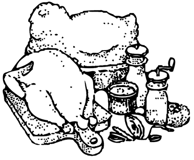

Вторые блюда
 Котлеты куриные «Аврора»
Котлеты куриные «Аврора»
Куриное филе зачистить. Из печени приготовить фарш: печень разрезать на ломтики и пожарить с овощами до готовности, провернуть через мясорубку два раза, заправить мадерой, солью и перцем, разделать на порции и завернуть в подготовленное куриное филе, смочить в яйце, запанировать в белом хлебе, нарезанном соломкой, и пожарить на масле.
При подаче котлеты положить на крутон, сбоку поместить гарнир — жареный картофель, нарезанный соломкой или кружочками, зеленый горошек, свежие помидоры, куриный гребешок. Соус подать отдельно. Посыпать зеленью.
Состав: куры — 400 г, куриная печень —100 г, хлеб — 80 г, сливочное масло — 60 г, мадера — 5 г, лук —10 г, морковь — 10 г, яйцо — 1 шт., картофель — 200 г, зеленый горошек — 150 г, помидоры — 100 г, куриный гребешок — 2 шт., соус майонез — 100 г, соль, перец, зелень петрушки.
Котлеты из филе курицыЧистое филе разделить на два филе (большое и малое), удалить пленки и сухожилия. В мякоти большого филе сделать продольный разрез и вложить в него малое филе, придать овальную форму, посолить, поперчить, опустить во взбитое яйцо и сухой рукой обвалять в сухарях или в тертом белом хлебе, затем обжарить на сливочном масле и довести до готовности в духовке. Подать на крутонах из белого хлеба, обильно полить сливочным маслом.
В качестве гарнира подать обжаренный картофель и тушеные овощи (морковь, горох, цветная капуста). Посыпать зеленью.
Состав: филе курицы (без кожи и костей) — 500 г, сливочное масло — 120 г, крутоны из белого хлеба — 4 шт., соль, перец, зелень, яйца — 2 шт., панировочные сухари или тертый хлеб — 3 ст. ложки, обжаренный картофель, тушеные овощи, сливочное масло.
Котлеты из кур «Мечта»Посолив и поперчив, филе припустить на масле до готовности и покрыть слоем густого молочного соуса, смешанного с сырым яичным желтком (половина нормы), смочить яйцом (вторая половина нормы), запанировать в белых сухарях, обжарить в топленом масле до получения ровной румяной корочки.
Подать с гарниром из зеленого горошка и картофеля, украсить веточками петрушки или листьями салата.
Состав: филе курицы — 600 г, сливочное масло — 120 г, топленое масло — 80 г, яйцо — 2 шт., зеленый горошек — 200 г, картофель — 400 г, зелень петрушки — 20 г, молочный соус, белые сухари, соль, перец; для молочного соуса: 10 г муки, 100 г молока, 10 г сливочного масла.
Котлеты из кур «Москва»Зачищенное и отбитое филе курицы нафаршировать паштетной массой из печени, залить сверху молочным соусом, посыпать тертым сыром и запечь в жарочном шкафу до готовности, до получения золотистой корочки. Из риса приготовить рассыпчатую кашу. При подаче на тарелку положить рис в форме котлеты, на рис котлету.
Блюдо гарнируют жареным картофелем, грибами в сметане, зеленым горошком, зеленью петрушки. Соус подают отдельно.
Состав: куры — 400 г, куриная печень — 60 г, сливочное масло — 40 г, сыр — 20 г, петрушка (корень) — 20 г, рис — 40 г, зеленый горошек — 40 г, белые грибы — 60 г, сметана — 20 г, соус —100 г, жареный соломкой картофель —100 г, молочный соус — 40 г, зелень.
Котлеты из кур фаршированные «Принцесса»Подготовленное филе из кур с косточкой отбить и поместить на него в виде батончика фарш из печени, сверху накрыть отбитым ломтиком малого филе, из которого предварительно удалено сухожилие, затем филе завернуть, придать ему форму котлеты, окунуть в яичный льезон (взбитая белковая масса), посолить, поперчить, запанировать в белых сухарях и пожарить на сильно разогретой сковороде в масле до получения светлокоричневой корочки. До готовности котлеты довести в жарочном шкафу.
При подаче котлеты положить на крутоны, на гарнир подать картофель стружкой, зеленый горошек, консервированные фрукты, зелень.
Состав: куры — 400 г, куриная печень — 60 г, сливочное масло —100 г, яйцо — 2 шт., белый хлеб — 80 г, сухари — 30 г, картофель — 400 г, горошек — 100 г, зелень петрушки, соль, перец.
Котлеты из куриного филе «Варварка»С куриного филе снять пленку и вынуть малое филе (жилку надрезать или вынуть), подрезать его со всех сторон и тонко отбить тяпкой. В середину филе поместить кнель с добавлением поджаренной куриной печенки в протертом виде, немного мадеры и сливочного масла для сочности.
Затем сделать котлеты, края плотно завернуть, окунуть в яичный льезон (взбитая белковая масса), запанировать в протертом белом хлебе и обжарить на сливочном масле. Готовые котлеты поместить на крутой, сверху положить гребешки кур, маленький отдельно поджаренный филейчик, на косточку надеть папильотку из белой бумаги.
Приготовление кнельной массы. Пропустить мякоть куриного филе или дичи через мясорубку 2–3 раза, положить замоченный в молоке или сливках черствый белый хлеб или слоеное тесто, перемешать и пропустить еще раз через мясорубку. Затем растереть массу в ступке и пропустить через сито. Протертую массу охладить и взбить, добавляя небольшими порциями яичный белок. В процессе взбивания влить в массу холодные сливки или молоко. В уже готовую кнельную массу добавить соль и осторожно перемешать. Масса готова тогда, когда кусочек массы, опущенный в воду, всплывает на поверхность.
В качестве гарнира подать картофель, жаренный во фритюре, нарезанный соломкой, белые грибы в сметане, зеленый горошек, зелень петрушки, отдельно — красный соус с добавлением мадеры.
Состав: куры — 450 г, куриный фарш (кнель) — 200 г, сливочное масло — 100 г, яйцо — 1 шт., белые сухари — 50 г, картофель — 300 г, зеленый горошек — 100 г, белые грибы — 200 г, петрушка, красный соус с мадерой — 200 г, куриный гребешок — 3 шт., сметана — 30 г, мадера.
Котлеты пожарскиеСнять с курицы кожу и отделить мясо от костей. Куриную мякоть (без кожи) пропустить через мясорубку, добавить размоченный в молоке и слегка отжатый хлеб, половину сливочного масла, посолить, поперчить, снова пропустить массу через мясорубку. Добавить молоко и хорошо перемешать. Фарш должен получиться пышный, но такой, чтобы из него можно было сформировать котлеты. Массу фарша разделить на куски по 100–120 г и сформовать из них овальные котлеты толщиной с палец. Обвалять каждую котлету в яйцах, затем в сухарях и поджарить на сковороде со сливочным маслом. Котлеты лучше всего подавать с овощами, приготовленными в молочном соусе. Для этого на сковороде растопить сливочное масло и обжарить на нем 2 столовые ложки муки. Развести эту муку в полстакане молока. В сковороду положить мелко нарезанные овощи и добавить сливочное масло, стакан молока, посолить, припустить до готовности. Затем влить соус и довести до кипения. Котлеты уложить на тарелку, залить овощами в молочном соусе, украсить зеленью.
Состав: курица — 1 шт., молоко — 0,5 стакана, пшеничный хлеб — 5–6 кусков, яйца — 3–4 шт., сливочное масло — 100 г, панировочные сухари — 1 стакан, соль, перец по вкусу; для соуса: морковь — 2–3 шт., репа — 1 шт., зеленый горошек — 0,5 стакана, молоко — 1,5 стакана, мука — 2 ст. ложки, сливочное масло — 1 ст. ложка.
Котлеты куриные рубленыеИз мякоти кур приготовить котлетную массу с добавлением 5 г сливочного масла на порцию. Из подготовленной котлетной массы сформовать котлеты по 30 г каждая, запанировать их в сухарях и пожарить на масле.
Подать с картофельными крокетами, зеленым горошком, морковью, зеленью петрушки.
Состав: мякоть курицы — 600 г, белый хлеб — 60 г, молоко — 60 г, сливочное масло — 60 г, сухари для панирования — 30 г, соль, зелень, картофельные крокеты — 300 г, зеленый горошек — 150 г, морковь — 150 г, масло для жарки.
Котлеты куриные рубленые «Днепропетровские»Из мякоти кур приготовить котлетную массу, сформовать из нее котлеты, которые начинить сваренной и мелко нарезанной печенью, заправленной молочным соусом (см. Котлеты пожарские), обвалять в панировке из белого хлеба и обжарить на масле.
Подать с жареным картофелем, зеленым горошком, морковью, свеклой, нарезанными мелкими кубиками, веточками петрушки, молочным соусом с мадерой.
Состав: мякоть курицы — 600 г, куриная печень — 70 г, белый хлеб — 200 г, картофель — 700 г, зеленый горошек — 200 г, морковь — 100 г, свекла — 100 г, соль, молочный соус с мадерой — 200 г, молочный соус, зелень петрушки; для молочного соуса: мука — 10 г, молоко — 60 г, сливочное масло — 100 г.
Котлеты куриные с грибамиМякоть курицы отделить от костей и нарезать кусочками. В молоке замочить белый хлеб, затем смешать его с кусочками курицы, посолить и пропустить через мясорубку два раза. Полученную массу размешать и хорошо взбить, чтобы получилась однородная пышная масса. Подготовленную массу разделать в виде лепешек, на середину поместить фарш, накрыть фарш краями лепешки и придать изделию форму котлеты, обвалять в сухарях и пожарить на масле.
Приготовление фарша. Свежие белые грибы промыть, мелко порубить, добавить немного воды и тушить 20 минут, после этого добавить соль, сметану и продолжить тушить до готовности. Затем фарш охладить.
Состав: мякоть курицы — 500 г, белый хлеб — 100 г, молоко — 150 г; для фарша: грибы — 250 г, сметана — 50 г, сливочное масло — 50 г, маргарин — 50 г, молотые сухари — 60 г, соль.
Шницель из курКуриное филе без косточки зачистить, отбить, посолить, поперчить, смочить в льезоне (взбитая белковая масса) и обвалять в нарезанном мелкой соломкой белом хлебе, придать форму шницеля и обжарить на масле. Готовый шницель положить на тарелку, к нему подать гарнир — жареный соломкой картофель, зеленый горошек, фрукты, зелень.
Состав: куры — 500 г, хлеб — 100 г, яйцо — 1 шт., сливочное масло — 80 г, консервированные фрукты — 100 г, картофель — 200 г, горошек — 150 г, соль, перец, зелень.
Тушеные куриные желудочкиОчищенные желудочки потушить до готовности, посолить и обжарить в масле.
Отдельно поджарить нарезанный полукольцами лук и помидоры. Когда желудочки будут готовы, добавить к ним обжаренный лук и помидоры и потушить все вместе 5 — 10 минут. При подаче можно посыпать зеленью и сбрызнуть соком лимона.
Особую пикантность этому блюду придает возможность его приготовления на костре или углях.
Состав: очищенные желудочки — 1 кг, репчатый лук — 5–6 шт., помидоры — 5–6 шт., топленое масло — 150 г, соль, лимоны — 0,5 шт.
Домашняя птица с кинзойТушку курицы, гуся или индюка разделить на порционные куски, промыть и, посыпав мелкой солью, отставить. В котле перекалить масло, положить послойно куски мяса, нарезанный лук вместе с душистой зеленью, затем еще слой мяса и лука и т. д. Затем залить небольшим количествам воды. Плотно закрыть крышкой и томить на очень слабом огне в течение часа. Мясо сварится на пару и изжарится на собственном жире.
Готовое блюдо подается на стол с солеными или свежими помидорами, огурцами, редиской или редькой.
Состав: домашняя птица — 1 шт., лук — 2 шт., красный перец — 1 стручок, кинза — 1 пучок, укроп — 1 пучок, вода — 0,5 стакана, соль, гарнир.
Птица, жаренная в обильном жиреРазрезанное на порционные куски отварное мясо обвалять в муке, смочить во взбитом с солью яйце и в заключение обвалять в молотых сухарях. Подготовленные куски мяса обжарить в обильном жире со всех сторон до образования светло-коричневой корочки и сразу подать на стол. Куски мяса полить небольшим количеством растопленного масла.
В качестве гарнира подать поджаренный в обильном жире картофель или картофельное пюре, тушеную морковь, горох или грибы, отварную цветную капусту.
Состав: отварное мясо курицы, индейки или фазана — 400 г, мука — 1 ст. ложка, яйцо — 1 шт., молотые сухари или нарезанный мелкими кубиками белый хлеб — 0,5 стакана, соль, жир для жарки.
Гусь или утка, жаренные с яблокамиПодготовленного гуся (утку) нафаршировать яблоками, очищенными от сердцевины и нарезанными дольками. Отверстие в брюшке зашить ниткой. Нафаршированного гуся (утку) поместить спинкой на сковороду или противень, добавить немного воды и поставить в духовой шкаф. Во время жарения гуся (утку) нужно несколько раз поливать вытопившимся жиром. Длительность жарки 1,5–2 часа.
У жареного гуся (утки) удалить нитки, вынуть ложкой яблоки и выложить их на тарелку или блюдо, гуся (утку) разрубить на порции и уложить на яблоки.
В качестве гарнира подходят печеные яблоки, гречневая каша, тушеная капуста или картофель.
Состав: гусь (утка) — 1 кг, яблоки — 750 г, масло — 50 г, гарнир.
Гусь, жаренный со сметанойВычистить и вымыть гуся, натереть его солью снаружи и внутри, в середину положить столовую ложку зернового перца; растопить 100 г копченого сала в кастрюле и положить туда гуся. Предварительно надо сварить средний кочан капусты, разрезать его на четыре части и, когда он побелеет, откинуть на сито. Положить гуся в кастрюлю, обложить его сосисками, вареной капустой, морковью, большим корнем сельдерея, нарезанным тонкими ломтиками, 3 большими резаными луковицами, прибавить 2 ложки уксуса и 5 ложек сметаны и варить на умеренном огне.
Когда все уварится, капусту выжать, гуся разнять на части, выложить на блюдо, обложить тонкими ломтиками горячей ветчины, нарезанными кусочками сосисок, капустой, луком и кореньями, с которыми варился гусь.
Гусь с красной капустой
Подготовить тушку гуся — выпотрошить, промыть, посолить внутри, натереть сухим майораном и нафаршировать яблоками без сердцевины. Тушку зашить, положить на протвешок, смазанный маслом, и зажарить в жарочном шкафу вместе с оставшимися яблоками. Отдельно потушить капусту. Готового гуся разрубить на порции, выложить на блюдо и загарнировать яблоками и отварным картофелем. Тушеную капусту и полученный при жарке сочок подать отдельно. Можно сочок развести поджаренной мукой, довести до кипения и процедить. Посыпать зеленью.
Состав: гусь — 1 шт., яблоки — 500 г, краснокочанная капуста — 2 кг, картофель — 1 кг, мука — 25 г, масло, соль, майоран, зелень.

Гусь по-фламандски
Обработанную тушку гуся посолить изнутри и снаружи, поперчить и смазать тушку маслом, а затем поставить в духовку для обжаривания. Когда гусь подрумянится со всех сторон, влить вино и бульон, закрыть крышкой и потушить его, переворачивая время от времени.
В качестве гарнира приготовить поджаренный картофель, обточенный в виде груши, морковь такой же формы и фасоль, политые маслом, а также фаршированные маленькие кочешки капусты с фаршем из мяса и бекона.
Чтобы их приготовить, кочан капусты зачистить, вырезать кочерыжку, посолить и положить в кипящую подкисленную воду. Варить 10–15 минут. Когда капуста остынет, разобрать ее на листья. Крупные листья положить снизу, а мелкие сверху. Из подготовленных таким способом листьев сделать маленькие кочаны. На каждый лист положить бекон, нарезанный соломкой, свернуть концы листа, прижать и сформовать в виде шарика величиной с яйцо. Затем каждый фаршированный кочешок завязать в салфетку для сохранения формы и уложить плотно в один ряд в кастрюлю, добавить кусок бекона, залить бульоном и поварить до готовности бекона и капусты.
Готовые фаршированные кочешки укладывают вокруг гуся и поливают сочком, в котором тушился гусь.
Состав: гусь — 1,5 кг, сливочное масло — 250 г, белое вино — 100 г, бульон — 100 г, соль, перец, картофель — 500 г, морковь — 300 г, зеленая фасоль — 300 г, фаршированная капуста — 250 г, лимонная кислота, бекон.
Утка по-тулузскиПодготовленную утку посолить изнутри и снаружи, сформовать, положить в кастрюлю с маслом и подрумянить со всех сторон в жарочном шкафу, добавить мелко нарезанные морковь, лук, сельдерей и продолжать жарить. Затем влить красное вино и потушить до готовности.
При подаче готовую утку выложить на блюдо и загарнировать очищенными каштанами и луком-саженцем, заправленными маслом. Полить соком, в котором тушилась утка.
Салат подать по выбору.
Состав: утка — 1 кг, сливочное масло — 250 г, красное вино — 100 г, лук — 300 г, каштаны — 500 г, соль, морковь, сельдерей, салат.
Курица или индейка, жаренная с овощамиМясо птицы нарезать на порционные куски, опустить в кипящую воду. Снять пену и приблизительно за 45 минут до окончания варки положить в эту же кастрюлю очищенные и нарезанные на ровные кусочки овощи, посолить и варить до полной готовности. Если птица молодая, то овощи и соль лучше добавить сразу после снятия пены, а мясо, как только оно станет мягким, вынуть. Когда будут готовы все продукты, группами выложить их на блюдо и полить небольшим количеством бульона, посыпать рубленым укропом или зеленью петрушки. Бульон сервировать в соуснике, можно приготовить также более густой соус с мукой.
В качестве гарнира подать салат из сырых овощей.
Состав: мясо курицы или индейки с костями — 750 г, вода — 1–1,5 л, лук-порей — 1 головка, морковь — 5–6 шт., цветная капуста — 1 большой кочан, фасоль — 200 г, петрушка — 1 корень, сельдереи, соль, укроп или зелень петрушки, салат из сырых овощей.
Курица или индейка по-ярославскиНарезать мясо птицы на порционные куски, подрумянить со всех сторон в масле и выложить на блюдо, которое следует держать в тепле. Прогреть в масле томат-пюре, тертые или рубленые коренья и муку, добавить измельченные тушеные грибы, сметану и бульон. Варить 6–8 минут и приправить. Мясо положить в соус и тушить на слабом огне под крышкой до полной готовности (25–30 минут). Если птица старая, то мясо надо тушить вместе с приправами в бульоне, а муку и сметану добавить позднее. Готовое блюдо посыпать рубленым укропом и украсить ломтиками помидоров.
В качестве гарнира подать отварной рис или вареный картофель, тушеные овощи и салаты в маринаде или из сырых овощей.
Состав: курица или индейка — 600 г, сливочное масло — 3 ст. ложки, мука — 1 ст. ложка, лук — 1 шт., морковь — 1 шт., петрушка — 1 корень, сельдерей, немного чеснока, томат-пюре — 3 ст. ложки, тушеные в собственном соку белые грибы или рыжики — 1 стакан, соль, бульон из птицы — 1,5–2 стакана, сметана — 2 ст. ложки, укроп, помидоры — 4–5 шт., гарнир.
Курица или индейка, тушенная с фруктамиПтицу нарезать на куски, обвалять в муке и обжарить в масле или в жире до образования коричневой корочки, добавить шинкованный лук, налить воды или бульона, приправить солью и перцем. Когда жидкость закипит, добавить нарезанные соломкой фрукты, вино или яблочный сок и тушить на слабом огне под крышкой. Когда мясо будет готово, заправить сливками и зеленью.
В качестве гарнира подать отварной рис, лук-порей и морковь.
Состав: курица — 1 шт. или индейка — 0,5 шт., сливочное масло или птичий жир — 2–3 ст. ложки, бульон или вода — 2–2,5 стакана, соль, перец, лук — 1 шт., свежие фрукты (яблоки, изюм, слива, абрикосы и т. п.) — 500 г или сушеные фрукты — 300 г, вино или яблочный сок — 4 ст. ложки, мука — 1 ст. ложка, сливки — 4 ст. ложки, зелень, гарнир.
Жареная индейка, фаршированная орехамиОсвободить от скорлупы грецкие орехи, ошпарить их кипятком, очистить от кожицы и потолочь до тестообразной массы. Затем прибавить поджаренную в масле и протертую печенку, желательно телячью, замоченный в молоке белый хлеб, сырые яйца, сливочное масло, соль. Все тщательно перемешать. Этой массой нафаршировать подготовленную тушку индейки и пожарить ее, периодически поливая соком и переворачивая.
При подаче индейку нарубить на порции и полить соусом.
Состав: индейка — 1 шт., печень — 400 г, ядра грецких орехов — 400 г, яйца — 2–4 шт., белый хлеб — 400 г, сливочное масло — 50 г, соль.
Курица, тушенная в томатеКурицу выпотрошить, опалить, хорошо промыть, разрезать на 4 части и обжарить в масле на сильном огне. Поместить в кастрюлю, добавить поджаренный лук, потроха, влить 1 л воды, закрыть крышкой и поставить тушить до полной готовности на небольшом огне. Томат прожарить с маслом, в бульон добавить муку, заправить перцем, солью, сахаром по вкусу, влить лимонный сок. Залить этим курицу и поставить кастрюлю на пар.
Перед подачей разрезать курицу на небольшие порции, выложить в глубокое блюдо, залить соусом. К курице можно подать макароны с маслом и тертым сыром.
Состав: курица — 1 шт., томат — 100 г, лук — 3 шт., топленое масло — 30 г, мука — 1 ст. ложка, соль, перец, сахар, сок из половины лимона, макароны.
Курица, тушенная под соусомМасло и нарезанные соломкой коренья выложить на сковороду, поставить на огонь и, когда масло закипит, поместить разрезанную на порции сырую курицу. Обжарить ее вместе с кореньями, подливая понемногу воду, чтобы не подгорели коренья. Когда курица хорошо обжарится, поместить ее вместе с кореньями в кастрюльку, залить бульоном, сваренным из потрохов курицы, посолить и варить примерно 40 минут.
Приготовление соуса. Масло и муку поджарить до золотистого цвета, развести бульоном, в котором варилась курица, влить уксус, добавить сахар, вскипятить и добавить в соус чернослив, предварительно замоченный в кипятке на 4–5 минут.
Залить этим соусом курицу.
Состав: курица — 1 шт., топленое масло — 150 г, морковь — 1 шт., сельдерей — 1 шт.; для соуса: бульон — 3 стакана, 3 %-й уксус — 1 ст. ложка, сахарный песок — 2 ст. ложки, чернослив — 200 г, топленое масло — 1 ст. ложка, мука — 1 ст. ложка, соль.
Отварная курицаОбработанную курицу положить в горячую воду, довести до кипения, снять пену и варить на слабом огне до полной готовности. Соль и измельченные коренья и лук добавить приблизительно в середине варки. Готовую курицу выложить на блюдо, нарезать на порционные куски и увлажнить небольшим количеством бульона. Из оставшегося бульона приготовить соус или сварить суп. Курицу посыпать зеленью петрушки.
Приготовление соуса. Муку прогреть в масле, пока она не приобретет золотистого оттенка, затем влить бульон и варить 5–6 минут, приправить солью и добавить сливки.
Курицу гарнировать отварным рисом или картофелем, тушеными овощами с мягким вкусом (морковь, горох, цветная капуста, фасоль) и салатом из тыквы, яблок или слив, летом — салатом из свежих огурцов или зеленым салатом.
Состав: курица — 1 шт., вода — 2 л, морковь — 3 шт., петрушка пли сельдерей, репчатый лук — 1 шт., соль, зелень петрушки, гарнир; для соуса: сливочное масло — 1 ст. ложка, мука — 1 ст. ложка, куриный бульон — 2–3 стакана, соль, сливки — 2 ст. ложки.
Петух с грибамиОчищенного петуха нафаршировать начинкой, приготовленной следующим способом: припустить в масле очищенный рис, посолить по вкусу, залить бульоном и тушить в течение 15 минут. Прибавить нарезанные ломтиками свежие грибы и трюфели, нарезанную кусочками и припущенную с маслом и солью по вкусу печенку. Хорошо перемешать и полученной смесью нафаршировать петуха, зашить, сформовать, посолить снаружи, смазать маслом и запечь в кастрюле. Подрумянив со всех сторон, влить чашку бульона, накрыть крышкой и тушить петуха, переворачивая периодически и поливая соком до готовности. После этого вынуть его из масла и на том же масле спассеровать муку. Подрумянив муку, залить коньяком, белым вином, сливками или молоком и чашкой бульона. Хорошо размешать, тушить в течение 10–15 минут и пропустить через пресс. Полученный крем заправить кусочком масла.
Перед подачей вырезать филе петуха и вынуть грудную кость, чтобы открыть начинку. Филе и ножки уложить около петуха, загарнировать его начинкой и полить приготовленным соусом. Подать на стол с салатом по выбору.
Состав: петух — 2 кг, сливочное масло — 200 г, рис — 200 г, бульон — 600 г, свежие грибы — 120 г, трюфели — 20 г, гусиная печенка — 100 г, мука — 50 г, коньяк — 30 г, белое вино — 100 г, сливки — 50 г.
Курица «Румянка»Насыпать на противень соль слоем 1,5–2 см так, чтобы курица целиком лежала на нем. Затем положить курицу, как можно лучше ее распластав. Жарить до образования румяной корочки (около 2 часов).
Подать с салатами.
Состав: небольшая нежирная курица — 1 шт., крупная соль — 1 кг.
Курица по-шведскиПодготовленную курицу посолить, поперчить изнутри и снаружи, положить в кастрюлю с маслом или на протвешок и поставить в жарочный шкаф. Подрумянить курицу со всех сторон, прибавить к ней нарезанный ломтиками, прокипяченный в воде и отцеженный лук. Вынуть курицу, припустить в том же масле лук, прибавить муку и обжарить ее, влить в нее сметану или кислое молоко, а также чашку бульона и хорошенько размешать. Положить в соус курицу и потушить до мягкости. Процедить соус через сито и заправить кусочком масла и соком лимона.
Перед подачей курицу нарубить на порции, на гарнир подать домашнюю лапшу пли пюре из каштанов и любой салат по выбору. Украсить веточками зелени.
Состав: курица — 1,1 кг, сливочное масло — 100 г, репчатый лук — 150 г, мука — 50 г, сметана — 400 г, соль, перец, зелень, гарнир, бульон.
Жареные цыплятаЦыплячьи тушки разрубить по грудной клетке пополам и распластать вместе с костями. Жарить в обильном жире с обеих сторон до образования светло-коричневой корочки с добавлением соли и перца. Жареных цыплят посыпать зеленью, полить сметаной и довести до кипения.
В качестве гарнира подать жареный картофель и острый сметанный соус, салат из огурцов или помидоров с большим количеством зелени.
Состав: цыплята — 4–5 шт., соль, перец, жир для жарки, сметана — 1 стакан, гарнир.
Жареные цыплята с перцемЦыплят нарубить на куски, желательно на 4 части, посолить, поперчить и запанировать в муке. Затем обжарить на сковороде до золотистого цвета. В сковороду с цыплятами добавить вермут, мелко нашинкованный репчатый лук и зелень, потушить минут 20–30 до мягкости. Сюда же добавить крахмал и довести до кипения.
При подаче тушеных цыплят полить соусом с крахмалом, а на гарнир подать отварной рис, жареный картофель, зеленый горошек.
Состав: цыпленок — 2 шт., мука — 0,75 стакана, сливочное масло — 120 г, белый вермут — 1 стакан, лук — 150 г, крахмал — 1 ст. ложка, соль, перец, зелень, гарнир.
Цыплята, жаренные во фритюреОтварное мясо цыплят, нарезанное на порции, посолить, поперчить, обвалять в муке, окунуть во взбитое яйцо, а затем обвалять в молотых сухарях и обжарить в большом количестве топленого масла до образования золотистой корочки и тут же подать к столу на большой тарелке, полив маслом. Вокруг уложить гарнир из овощей и грибов.
Состав: вареные цыплята — 450 г, мука — 25 г, яйца — 1,5 шт., молотые сухари — 0,7 стакана, перец, соль, топленое масло для обжарки — 300 г, зелень петрушки, картофель — 600 г, морковь — 50 г, горох — 50 г, грибы — 40 г, цветная капуста — 50 г.
Цыплята, жаренные в кляреПодготовленных цыплят разрезать вдоль на две части, натереть солью и лимонным соком и убрать в холодильник на 30 минут. Тем временем из молока, масла сливочного, муки, яиц приготовить тесто, которое следует посолить, заправить мускатным орехом и тщательно вымесить. Приготовленных цыплят наколоть на вилку, опустить в тесто и обжарить в большом количестве топленого масла.
Состав: цыплята — 2 шт., лимонный сок, яйца — 3 шт., молоко — 1,5 стакана, сливочное растопленное масло — 10 г, мука — 2 стакана, топленое масло для обжарки — 300 г, мускатный орех, зелень петрушки, соль, гарнир.
Цыплята с белыми грибамиФиле и мякоть окорочков обжарить на оливковом масле. Когда кусочки цыплят приобретут золотистый цвет, добавить мелко нашинкованный лук, отварную ветчину, грибы, зелень, сливочное масло, залить стаканом бульона и проварить. Далее добавить мелко нарезанные помидоры и все это тушить в течение 15–20 минут на слабом огне.
При подаче готовые кусочки филе и ножки цыплят выложить на тарелку, полить соусом, который получился при тушении, украсить зеленью, отдельно подать отварную домашнюю лапшу.
Состав: цыплята — 1 кг, оливковое масло — 90 г, репчатый лук — 50 г, ветчина — 50 г, белые грибы — 120 г, свежие помидоры — 150 г, домашняя лапша, сливочное масло — 60 г, зелень, бульон.
Цыплята «Пич»Чистые кусочки филе весом 50–60 г, посолить, посыпать перцем и положить в маринад. Для маринада нарезать лук, зелень петрушки, чеснок, добавить уксус и растительное масло в таком количестве, чтобы кусочки были закрыты маринадом. Держать их в таком маринаде 3–4 часа, периодически помешивая.
Затем из кусочков филе сформировать рулетики или «восьмерки», начиненные кусочками шпика, и нанизать на шампур, чередуя с кружками помидоров и огурцов. Обжарить на углях до готовности, периодически поливая маринадом.
Цыплята с кнелями из гусиной печениПодготовленные тушки цыплят посолить и обжарить без колера на масле с луком, морковью и сельдереем, поливая бульоном, до готовности. Загарнировать кнелями из гусиной печени, украсить трюфелями, тушенными в масле, вареными телячьими мозгами, тушенными с маслом и белым вином, шляпками белых грибов.
При подаче нарубленные кусочки цыпленка положить на поджаренные в масле хлебные крутоны, а гарнир положить на середину блюда, залить белым соусом (см. Котлеты пожарские) и украсить зеленью.
Состав: цыплята — 1,2 кг, сливочное масло — 200 г, морковь — 30 г, лук — 30 г, сельдерей -40 г, кнели — 150 г, трюфели — 30 г, белое вино — 150 г, белые грибы — 150 г, мозги — 300 г, белый соус (основной) — 250 г, зелень, крутоны, бульон.
Цыпленок запеченныйОбработанную, промытую тушку цыпленка посолить, поперчить, заправить ножки в кармашек и запечь в жарочном шкафу, предварительно покрыв филейную часть тонким слоем шпика. Цыпленка поливать периодически маслом и поворачивать разными сторонами, пока он не будет готов.
В качестве гарнира подать нарезанный ломтиками говяжий язык, припущенный в масле и вине «Марсала». Ломтики языка разложить вокруг цыпленка. Отдельно подать пюре из каштанов и салат по выбору.
Цыпленок соте со спаржейОбработанную тушку цыпленка сварить в подсоленной воде, вырезать филе и ножки, кости удалить и чистое мясо обжарить на масле. При подаче на стол поджаренное мясо положить на поджаренные хлебные крутоны.
В качестве гарнира подать вареную спаржу и грибы, нарезанные кружочками. Грибы положить на мясо цыпленка, а спаржу разложить вокруг и залить все маслом с сухарями. Подать с салатом по выбору.
Состав: цыпленок — 1,2 кг, сливочное масло — 200 г, грибы — 150 г, спаржа — 1,2 кг, хлебные корки — 150 г, тертый хлеб — 50 г, соль.
Цыпленок со сливками и лимономОбработанную тушку цыпленка посолить и сформовать, то есть с обеих сторон брюшка сделать надрезы и ножки вставить в эти кармашки. Положить затем тушку на густо смазанный маслом протвешок и тушить в жарочном шкафу, пока он не подрумянится, потом добавить бульон и тушить цыпленка до готовности. Отдельно приготовить и отварить домашнюю лапшу, ветчину нарезать соломкой, слегка поджарить и перемешать с отварной лапшой. При подаче на середину блюда поместить приготовленный гарнир, а вокруг него разложить нарубленные куски цыпленка.
Залить соусом со сливками и лимоном, заправленным сочком, в котором тушился цыпленок. Отдельно подать салат из овощей.
Состав: цыпленок — 600 г, сливочное масло — 100 г, сливки, лимон, бульон, гарнир, ветчина — 50 г, соль, зелень, соус — 150 г; для лапши: мука — 150 г, яйца — 2 шт.
Цыпленок с трюфелями
Подготовленные филе и ножки цыпленка, без костей, посолить, поперчить и обжарить на масле до румяной корочки. Затем залить вином «Марсала» и мясным соком и тушить до готовности. В качестве гарнира приготовить зачищенные от пленок и тушенные с маслом и белым вином телячьи железы, сваренную и нарезанную соломкой ветчину, сваренные и тушенные с маслом грибы и нарезанные соломкой трюфели. Все приготовленные гарниры смешать. Поджарить картофель на масле в виде круглых шариков.
Готовые куски цыпленка выложить на крутоны, а вокруг поместить букетами гарнир. Полить соком, в котором жарился цыпленок.
Состав: цыпленок — 1 кг, сливочное масло — 200 г, вино «Марсала» — 150 г, мясной сок — 250 г, телячьи железы — 250 г, белое вино — 100 г, ветчина — 100 г, грибы — 150 г, трюфели — 30 г, картофель — 500 г, хлебные крутоны — 150 г, соль, перец.
Цыпленок в винеОбработанную тушку цыпленка посолить, поперчить, положить на противень с маслом и поставить в духовку. В процессе жарения цыпленка следует периодически поливать вином. Когда цыпленок будет готов, вынуть его из духовки, охладить, отделить мякоть от костей, выложить ее на тарелку или блюдо и загарнировать свежими помидорами, зеленым луком, тертым сыром. Украсить зеленью петрушки и подать с жареным картофелем.
Состав: цыпленок — 1,5 кг, сливочное масло — 200 г, сухое вино — 300 г, помидоры, картофель, зеленый лук, сыр, зелень петрушки, соль, перец.
Цыпленок «Александра»Филе и ножки цыплят вырезать, положить в кастрюлю с маслом и подрумянить на огне со всех сторон. Посолить, залить белым вином и бульоном, прибавить лук, морковь и сельдерей, накрыть крышкой и тушить на слабом огне до мягкости (при этом вино и бульон должны выпариться). Готовые куски филе и ножки вынуть, а в том же масле запассеровать, не подрумянивая, муку, залить ее сливками и стаканом куриного бульона и проварить 10–15 минут. Готовый соус процедить, вылить на филе и ножки и довести до кипения. Соус не должен быть слишком густым. При подаче мясо положить на поджаренные в масле хлебные крутоны. В качестве гарнира подать спаржу — соединить по 3–4 сваренные головки спаржи, обмакнуть их в жидкое тесто-кляр и поджарить во фритюре.
По желанию можно использовать и другие гарниры из овощей: сваренные и заправленные маслом горошек, зеленую фасоль.
Состав: цыпленок — 1,1 кг, сливочное масло — 150 г, белое вино — 150 г, бульон — 150 г, морковь — 50 г, сельдерей — 150 г, лук — 50 г, хлеб — 200 г, мука — 30 г, сливки — 150 г, спаржа — 1 кг, кляр — 500 г, соль.
Цыпленок в чесноке
Филе и ножки посолить, обжарить на масле, добавить мелко нарезанный лук и подрумянить его.
Положить томат-пюре, залить белым вином и куриным бульоном, добавить ароматическую зелень, накрыть крышкой и тушить на слабом огне. Загарнировать сваренным луком-саженцем, заправленным маслом, мелко нарезанными помидорами, чесноком и сваренным и припущенным с маслом укропом. Подавать готовые куски филе и ножки на поджаренных в масле хлебных крутонах с гарнирами, разложенными вокруг букетиками.
Отдельно подать отварной или припущенный рис.
Состав: цыпленок — 1,1 кг, сливочное масло — 150 г, лук — 50 г, томат-пюре — 30 г, белое вино — 150 г, бульон — 300 г, лук-саженец — 400 г, помидоры — 150 г, чеснок — 15 г, укроп — 5 г, хлебные крутоны — 150 г, рис — 250 г, ароматическая зелень.
Цыпленок с морковью
Подготовленные куски филе и ножки цыпленка посолить, обжарить на масле, запассеровать и добавить мелко нарезанный лук и залить куриным бульоном так, чтобы все куски были им покрыты. Положить ароматическую зелень, накрыть крышкой и тушить на слабом огне до мягкости.
В качестве гарнира приготовить нарезанную кружками сваренную или тушенную с сахаром и маслом морковь.
Состав: цыпленок — 1,1 кг, сливочное масло — 150 г, лук — 50 г, морковь — 1 кг, сахарный песок — 30 г, ароматическая зелень, куриный бульон, соль.
Цыпленок с огурцамиПриготовленные филе и ножки цыпленка посолить, поперчить, уложить в кастрюлю с толстым дном и обжарить со всех сторон, затем залить стаканом бульона и соком лимона, добавить зелень и тушить до мягкости. Для гарнира огурчики освободить от кожицы и семян, нарезать ромбиками и припустить в воде с маслом до мягкости.
На подсушенные крутоны поместить готовое филе и окорочка цыпленка, полить соком, в котором они тушились, а рядом выложить подготовленные огурчики. Можно также добавить картофель и зелень.
Состав: цыпленок — 1 кг, сливочное масло — 140 г, соленые огурцы — 800 г, лимон — 1 шт., хлебные крутоны — 125 г, соль, перец, свежая зелень, картофель, бульон — 1 стакан.
Домашняя птица с грецкими орехамиПодготовленную тушку индейки, курицы, гуся или утки обычным способом отварить до полуготовности, а потом обжарить. Очищенные грецкие орехи пропустить через мясорубку, выжать из них масло, слить его в отдельную посуду и накрыть крышкой.
Потолочь зелень кинзы, чеснок, соль, стручковый перец, присоединить к истолченным грецким орехам, развести бульоном (7–8 стаканов) и поставить на огонь на 10 минут. Затем добавить черный перец, молотые корицу и гвоздику, влить винный уксус и проварить еще 6 — 10 минут.
Обжаренную тушку птицы нарезать кусками, уложить в соответствующую посуду, посыпав сырым нашинкованным репчатым луком.
Затем залить готовым горячим соусом, остудить и перед подачей на стол полить предварительно подготовленным ореховым маслом.
Состав: птица — 1 шт., очищенные грецкие орехи — 500 г, репчатый лук — 300 г, зелень кинзы — 3 веточки, чеснок, черный и стручковый перец, винный уксус, корица, гвоздика, соль, сливочное масло — 150 г, соус.
Куриное филе «Националы»Филе жареной курицы, ветчину, говяжий язык пошинковать соломкой, обжарить на масле, после чего заправить сметанным соусом с добавлением томата. Заправленную массу прокипятить, переложить в кокотницы или в однопорционные сковородки, посыпать тертым сыром и поставить в духовой шкаф для запекания.
При подаче на стол посыпать мелко нарезанной зеленью и грибами.
Состав: куры — 600 г, грибы — 100 г, ветчина — 100 г, говяжий язык — 100 г, томат — 30 г, сыр — 20 г, сметанный соус, сливочное масло — 60 г, зелень.
Рагу из курицы или индейкиМясо птицы вместе с костями нарезать на маленькие кусочки, обжарить в разогретом жире до образования коричневой корочки и, добавив жидкости, приправ и нарезанных кубиками овощей, тушить до полной готовности (молодую птицу — 20–30 минут, старую птицу дольше).
Лук и овощи, прежде чем смешивать с другими продуктами, можно потушить в масле. Фасоль добавить в начале тушения, консервированный горошек — за 10 минут до окончания тушения. Муку прогреть в жире так, чтобы она стала золотисто-желтой, смешать с жидкостью, в которой тушится мясо, и варить 5–6 минут, последней добавить сметану. Подавать на стол, посыпав зеленью.
В качестве гарнира подходит жареный картофель или картофельное пюре и салат из свежих огурцов, помидоров или зеленый салат.
Состав: мясо птицы — 600 г, птичий жир — 1 ст. ложка, сливочное масло — 1 ст. ложка, вода или бульон — 2–2,5 стакана, соль, перец, лавровый лист — 1 шт., морковь — 4 шт., репчатый лук или лук-порей — 1 шт., корень петрушки — 1 шт., кусочек сельдерея, фасоль или зеленый горошек — 300 г, мука — 1 ст. ложка, сметана — 0,5 стакана, рубленая зелень петрушки — 2 ст. ложки.
Рулет из уткиУтку освободить от костей, начиная с грудины, чтобы получился один пласт с кожей. Отбить кусок говядины и положить по центру пласта, предварительно с двух сторон обваляв в пряностях и посолив. Уместен будет также истолченный чеснок. Массу выложить на большой лист целлофана (не полиэтилена!) и завязать в него туго свернутую в виде рулета утку.
Завязывать надо шпагатом по такому же принципу, как завязывается колбаса или перевязываются бандероли: сначала узел на конце, потом несколько «перемычек» и снова узел. Рулет поставить в духовку и выпекать из расчета 1 час на 1 кг сырой массы.
Фрикасе из цыпленкаПодготовленные тушки цыплят разрезать по суставам на порционные куски или (по желанию) вырезать филе и отделить ножки. Положить в кастрюлю, залить холодной водой и варить, снимая появляющуюся при кипении пену. Прибавить очищенные и нарезанные ломтиками лук, морковь и сельдерей; посолить по вкусу, положить лавровый лист и варить до мягкости мяса.
Отдельно спассеровать на масле, не подрумянивая, муку; залить бульоном, в котором варились цыплята, размешать и прибавить молоко; варить 10–15 минут, после чего снять с огня, прибавить один за другим, яичные желтки, размешивая венчиком, чтобы они не свернулись, и добавить лимонный сок. Процедить соус на уложенное в другую кастрюлю мясо. Посыпать черным перцем и мелко нарезанной зеленью петрушки. Готовое фрикасе хранить на водяной бане. В качестве гарнира подать рис. Рис можно уложить на блюде в виде бордюра, а в середину положить мясо.
Состав: цыплята — 1,25 кг, масло — 150 г, лимоны — 2 шт., лавровый лист, мука — 50 г, черный перец — 10–15 горошин, рис — 250 г, яйца — 3 шт., молоко — 250 г, морковь — 1 корень, сельдерей — 0,5 корня, лук — 1 шт., петрушка — 1 пучок, соль.
Горячий галантинКурицу подготовить, удалив кости. Из котлетной массы (из телятины и свинины) приготовить фарш, смешать его с мелко нарезанными вареными грибами и ветчиной, добавить трюфели, посолить и прибавить черный перец. Готовый фарш хорошо перемешать, наполнить им подготовленную тушку курицы, натянуть кожу и зашить ниткой. Нафаршированную тушку завернуть, как рулет, в салфетку, края которой завязать шпагатом. Положить в бульон и варить в нем вместе с вынутыми костями в течение 1,5 часа, после чего вынуть из бульона, развернуть салфетку и положить курицу в другую кастрюлю с 1–2 столовыми ложками сливочного масла для подрумянивания со всех сторон. На том же масле запассеровать муку, прибавить томатный соус и залить им, а также мясным соком или бульоном курицу и проварить ее еще 15–20 минут. Готовую курицу вынуть, а соус процедить и заправить сливочным маслом. Перед подачей с нафаршированной тушки снять нитку, нарезать ее и загарнировать различными овощами, пюре, рисом, домашней лапшой, полить соусом.
Состав: курица — 1,2 кг, котлетная масса — 750 г, трюфели — 1–2 шт., грибы — 50 г, ветчина — 100 г, сливочное масло — 100 г, мука — 25 г, томатный соус — 100 г, черный перец — 1 г, мясной сок — 100 г, гарнир.
Рагу из потрохов
Потроха домашней птицы хорошо очистить и промыть, посолить и слегка обжарить на сковороде, затем посыпать мукой и продолжать жарить еще несколько минут. Затем жареные потроха сложить в кастрюлю, залить бульоном, добавить томат и тушить на слабом огне. Через полчаса после начала тушения добавить в кастрюлю нарезанные дольками и обжаренные картофель, морковь, петрушку, репчатый лук. Все это посолить, поперчить, поместить лавровый лист, осторожно перемешать и тушить еще полчаса.
Состав: потроха куриные или другой птицы — 500 г, картофель — 600 г, морковь — 100 г, петрушка — 30 г, лук — 40 г, томат — 50 г, мука — 25 г, масло — 50 г, соль, перец, лавровый лист.
Запеканка из куриных потроховШпик разрезать на кусочки и подрумянить. Обжарить в нем лук и изрубленные субпродукты, прежде всего желудочки, затем сердце и, наконец, печенку, так как она прожаривается наиболее быстро. Заправить смесь солью и перцем, добавить немного горячей воды и тушить до полной готовности. Отваренный рис смешать с готовыми продуктами, переложить в смазанную маслом форму. Яйцо взбить, смешать с молоком и залить печенку с рисом. Посыпать тертым сыром и кусочками маргарина. Запекать 10–15 минут в нежаркой духовке.
Сервировать с кисло-сладким салатом (из тыквы, брусники, моркови с клюквой и др.).
Состав: субпродукты (желудочки, сердце, печень) — 350 г, шпик или другой жир — 50 г, лук — 1 шт., соль, перец, рис — 0,5 стакана, яйцо — 1 шт., молоко — 1 стакан, тертый сыр, маргарин, гарнир.
Яйца, фаршированные гусиной печенкойОтварить вкрутую яйца, очистить и разрезать вдоль на две половинки. Вынуть желтки, протереть их через сито, затем растереть с припущенной гусиной печенью, добавить сливочное масло и соль. Все хорошо перемешать, наполнить фаршем половинки яиц. При подаче уложить на листья салата.
Состав: яйца — 4 шт., гусиная печень — 190 г, сливочное масло — 20 г, зеленый салат — 50 г, соль.
Омлет с курицейФилейное мясо отварной курицы слегка поджарить на сковороде, репчатый лук запассеровать, добавить сок лимона. На сковороду вылить подготовленный омлет и, как только он начнет твердеть, выложить на него куриное мясо, кружочки помидоров, обжаренный лук, зелень, сложить омлет пополам, чтобы фарш оказался в середине, и запечь в жарочном шкафу.
Состав: курица — 200 г, помидор — 1 шт., сливочное масло — 30 г, лимон — 0,5 шт., яйца — 4 шт., вода — 100 г, репчатый лук — 50 г, зелень.
Тушеная индейкаПодготовленную индейку посолить внутри и снаружи, сформовать, положить в кастрюлю с маслом и тушить. Подрумянить со всех сторон в жарочной печи, прибавить мелко нарезанные морковь, лук и сельдерей, подрумянить их с мясом, залить белым вином и бульоном, накрыть крышкой и тушить до мягкости, периодически переворачивая тушку. Готовую индейку можно загарнировать по желанию рисом
Индейка с соусом со сливкамиТушить индейку, как описано выше, довести до мягкости и вынуть. Из сока, в котором она тушилась, приготовить соус со сливками и коньяком, к пассерованным овощам прибавить муку, спассеровать ее, залить вином, коньяком, сливками и бульоном, кипятить 10–15 минут и пропустить через густое сито.
В качестве гарнира приготовить рис, к которому во время варки прибавить нарезанную кусочками, посыпанную мукой, посоленную и обжаренную на масле гусиную печенку и печенку индейки. Рис подать вместе с индейкой, полив ее предварительно приготовленным соусом. Оставшуюся часть соуса подать отдельно в соуснике. Подать с салатом по выбору.
Состав: индейка — 2,5 кг, сливочное масло — 250 г, морковь — 30 г, сельдерей — 30 г, лук — 30 г, белое вино — 150 г, мука — 50 г, коньяк — 50 г, сливки — 300 г, бульон — 200 г, рис — 100 г.
Индейка по-русскиИндейку тушить, как описано выше. В качестве гарнира приготовить кнели из куриного мяса без костей и кожи и молодой телятины. Мясо перемешать и пропустить 2–3 раза через мясорубку с частой решеткой. Полученную котлетную массу смешать с заварным тестом, посолить, посыпать черным перцем, прибавить мускатный орех и свежие сливки или молоко и хорошо размешать деревянной ложкой. Из готовой массы при помощи двух деревянных ложек, предварительно погруженных в горячую воду, разделить кнели. Полученные кнели яйцевидной формы положить на противень, смазанный маслом, украсить трюфелями, влить немного бульона, накрыть крышкой и поставить в жарочный шкаф на 10–15 минут. Приготовить свежие грибы и телячьи железы, сваренные и тушенные в масле, и картофель.
Готовую индейку нарезать на куски, положить на середину блюда и залить соком, в котором тушилась индейка, сгущенным небольшим количеством крахмала и заправленным вином для аромата, вокруг разложить букетиками гарниры. Подать с салатом по выбору.
Состав: индейка — 2,5 кг, сливочное масло — 200 г, морковь — 30 г, сельдерей — 30 г, лук -30 г, белое вино — 100 г, бульон — 100 г, куриное мясо — 300 г, молодая телятина — 400 г, заварное тесто — 100 г, сливки — 100 г, мускатный орех, молотый черный перец — 1 г, трюфели — 50 г.